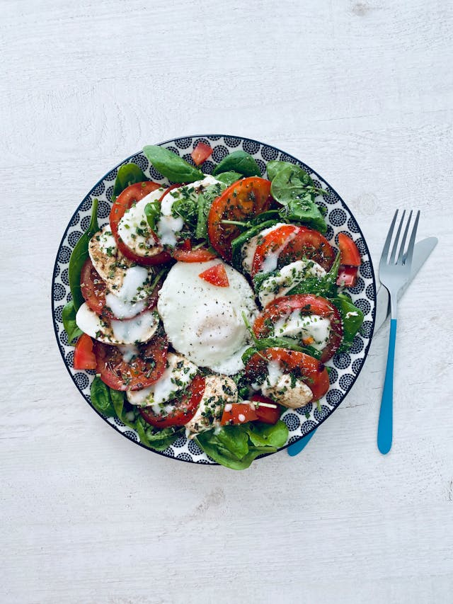

Caprese

Description
Ingredients
- 8 Tomatoes
- 4 Lasagna sheets
- 400gr minced meat
- 3 Onions
Steps
- Fry the minced meat and the chopped onions.
- Squish the tomatoes and add them to the pan.
- Layer the sauce in the oven pan, divide each layer with a lasagna sheet.
- Wait until the oven is done and Bona Petite!